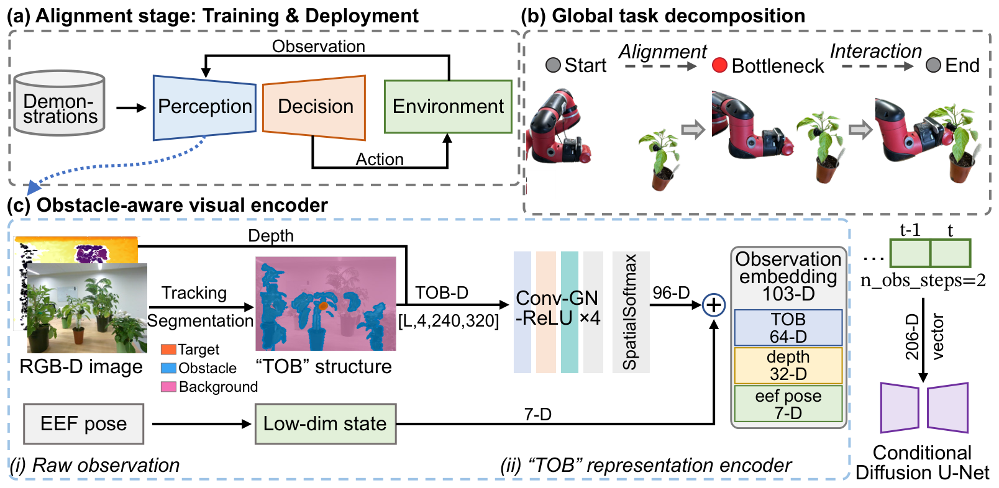
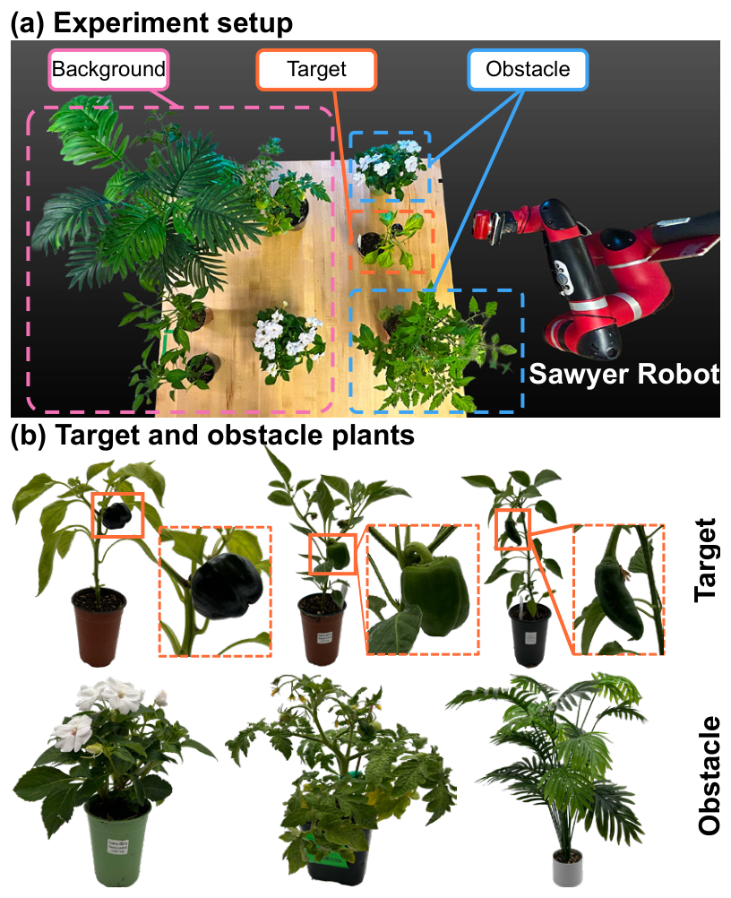
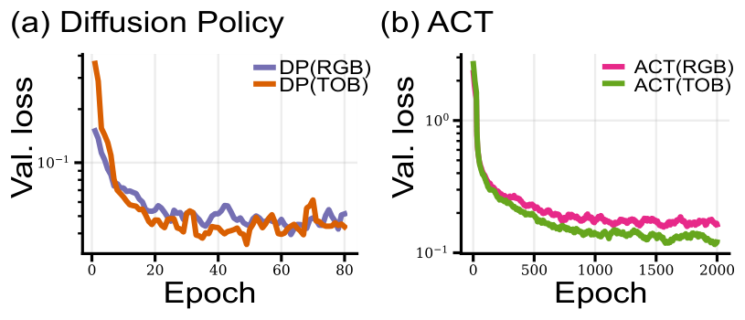
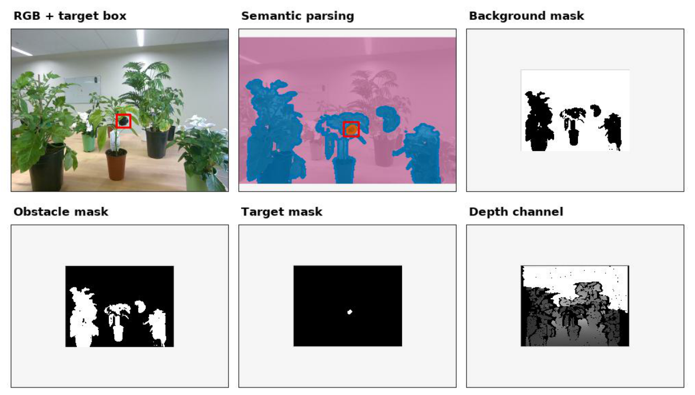

Abstract
Imitation learning has achieved impressive results in robotic manipulation, yet most existing approaches assume clean backgrounds and lack explicit mechanisms for obstacle-aware motion generation. Extending such policies to cluttered, real-world scenes with unstructured obstacles remains a key generalization challenge. We present ObstaDiff, a decomposed diffusion-policy framework with a lightweight obstacle-aware visual encoder. ObstaDiff extracts a structured target–obstacle–background representation, enabling the downstream alignment policy to generate end-effector trajectories toward a target-centered bottleneck pose while reasoning about surrounding obstacles. We evaluate ObstaDiff on 61 real-robot greenhouse trials per method (366 executions in total). ObstaDiff achieves 75.41% average task success and 8.20% average obstacle collision rate, outperforming representative imitation-learning baselines and improving generalization in cluttered agricultural scenes.
Method

Overview of ObstaDiff. Eye-in-hand RGB-D observations are converted into a structured target–obstacle–background (TOB) representation and encoded with robot state into a 103-D conditioning vector for a diffusion policy. The policy performs obstacle-aware alignment to a target-centered bottleneck pose, after which replayed actions execute close-range interaction.
Structured TOB observation. Every pixel of the eye-in-hand frame is assigned one of three semantic roles — target, obstacle, or background — producing three binary masks that are concatenated with the aligned, normalized depth image into a compact four-channel input. Encoding semantic roles and depth this way preserves target–obstacle spatial relationships while suppressing appearance-level background variation.
Obstacle-aware encoder. The TOB observation is not a natural image, so it is split into a semantic branch and a depth branch. Their features are concatenated with the 7-D end-effector pose into a 103-D conditioning vector, which over two observation steps forms the 206-D input to the conditional diffusion U-Net.
Alignment-stage diffusion policy. A noise-prediction network is trained to denoise action sequences conditioned on the encoded structured observations. At inference the policy predicts 16 actions and executes the first 8 in a receding-horizon manner before re-planning.
Bottleneck switching. Rather than switching at a hard-coded pose, ObstaDiff compares the current target observation against a replay library collected from demonstrations and switches to the replay-based interaction stage when a close enough entry is found. Decoupling obstacle-aware approach from close-range behavior lets the same alignment policy support touching, harvesting, or inspection by changing only the replay library — no retraining required.
Experimental Setup

Hardware. All real-robot experiments run on a 7-DoF Sawyer arm with an eye-in-hand Intel RealSense D455 RGB-D camera, used directly as the onboard observation sensor without external camera calibration. Policies are deployed on an NVIDIA RTX 2080 Ti and trained on an RTX 6000 Ada.
Task. An indoor greenhouse testbed reproduces the visual clutter and spatial constraints of real greenhouse manipulation. The robot must reach a pepper target inside a predefined target region while avoiding the surrounding plant obstacles.
Three generalization settings, 61 trials in total:
- TPG — target-pose generalization: 10 target positions × 2 orientations (20 trials).
- OLG — obstacle-layout generalization: 3 obstacle orderings, 7 obstacle positions (21 trials).
- TAG — target-appearance generalization: two unseen green pepper varieties, 10 poses each (20 trials).
Six methods × 61 trials gives 366 real-robot executions. Training uses 90 expert alignment demonstrations.
Results
| Method | TSR (%) ↑ | OCR (%) ↓ | TCT (s) ↓ | Smooth (10−4) ↓ | ||||||
|---|---|---|---|---|---|---|---|---|---|---|
| TPG | OLG | TAG | Mean | TPG | OLG | TAG | Mean | |||
| ACT (RGB) | 40.00 | 52.38 | 45.00 | 45.90 | 25.00 | 14.29 | 5.00 | 14.75 | 20.77 | 1.16 |
| ACT (TOB) | 30.00 | 66.67 | 25.00 | 40.98 | 15.00 | 14.29 | 5.00 | 11.48 | 18.38 | 0.77 |
| DP (RGB) | 55.00 | 42.86 | 50.00 | 49.18 | 35.00 | 33.33 | 10.00 | 26.23 | 18.41 | 1.35 |
| DP (RGB-D) | 60.00 | 42.86 | 50.00 | 50.82 | 35.00 | 33.33 | 10.00 | 26.23 | 18.67 | 1.34 |
| DP (TOB) | 55.00 | 38.10 | 45.00 | 45.90 | 30.00 | 38.10 | 15.00 | 27.87 | 18.17 | 1.19 |
| ObstaDiff (ours) | 75.00 | 71.43 | 80.00 | 75.41 | 5.00 | 19.05 | 0.00 | 8.20 | 15.57 | 1.13 |
Table 1. Main real-robot results across three generalization settings. Each method is run on all 61 trials (TPG n=20, OLG n=21, TAG n=20), giving 366 real-robot executions in total; the mean is computed over the 61 pooled trials rather than as an average of the three per-setting rates. TCT and trajectory smoothness are computed over successful TPG trials. Best results in bold.
ObstaDiff achieves the best task success rate in all three generalization settings, with a mean TSR of 75.41% against 45.90% for ACT (RGB) and 49.18% for DP (RGB), and the best mean OCR (8.20% versus 14.75% and 26.23%). Qualitatively, baseline policies often move directly toward the target and contact nearby plants in cluttered layouts, while ObstaDiff aligns with the target-centered free space before entering the bottleneck region.
Ablations

TOB stabilizes training. TOB reduces validation loss, but the ACT (TOB) real-robot results suggest that lower supervised loss alone does not guarantee higher task success.
Depth alone is not enough. Appending aligned depth to the standard DP encoder moves mean TSR only from 49.18% to 50.82% — one additional successful trial out of 61 — and leaves OCR unchanged at 26.23%.
Structured input alone is not enough either. Feeding the same encoder the identical four-channel TOB observation drops mean TSR to 45.90% and raises mean OCR to 27.87%. Since DP (TOB) and ObstaDiff share the same observation, demonstrations, and batch size, the remaining 29.5-point TSR gap is attributable to the structured encoder.
The pattern holds on a different policy class. Adding TOB to ACT cuts mean OCR from 14.75% to 11.48% and improves trajectory smoothness from 1.16 to 0.77, but mean TSR drops from 45.90% to 40.98%.
TOB Preprocessing

Example TOB preprocessing outputs. From left to right and top to bottom: raw RGB with the target box, semantic parsing, and the background, obstacle and target masks plus the depth channel that together form the four-channel policy input.
BibTeX
@inproceedings{wang2026obstadiff,
title = {ObstaDiff: Generalizable Diffusion Policy Learning via Obstacle-aware Representations},
author = {Wang, Jiawen and Yao, Kevin and Jawed, Khalid},
booktitle = {Proceedings of the 10th Conference on Robot Learning (CoRL)},
address = {Austin, TX, USA},
year = {2026},
url = {https://arxiv.org/abs/2609.10918}
}